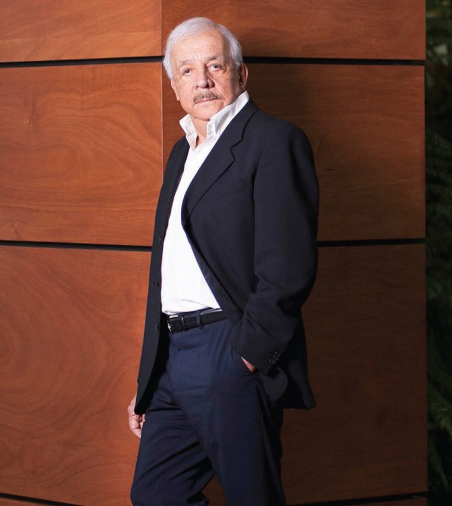

En la década de 1980, se desempeñó como jefe de la compañía estatal de telecomunicaciones. Fue Ministro de Comunicaciones en el gobierno de Vinicio Cerezo, quien se desempeñó como Presidente de Guatemala de 1986 a 1991. Es el presidente de Tigo Guatemala, el mayor proveedor de servicios de telefonía móvil de ese país con más de ocho millones de usuarios y una participación de mercado de más del 54%. A principios de 2013, Tigo promovió la adopción de teléfonos inteligentes por parte de sus usuarios; comenzó vendiendo 30,000 teléfonos inteligentes por mes, luego a fines de 2013 100,000 por mes y a fines de 2014 vendió 150,000 por mes.
Como se dice en entrevistas con los medios de comunicación, su vida profesional comenzó a trabajar como empleado público en la Municipalidad de Guatemala (Gobierno de la Ciudad de Guatemala) y el Gobierno Central. Posteriormente, se convirtió en empresario en el negocio de la construcción, logrando su primer proyecto a través de una hipoteca a largo plazo. Más tarde se dedicó a la construcción de carreteras en Guatemala. Debido a la dura competencia, decidió explorar nuevos horizontes. Así comenzó el negocio de la construcción, desarrollando proyectos de vivienda.